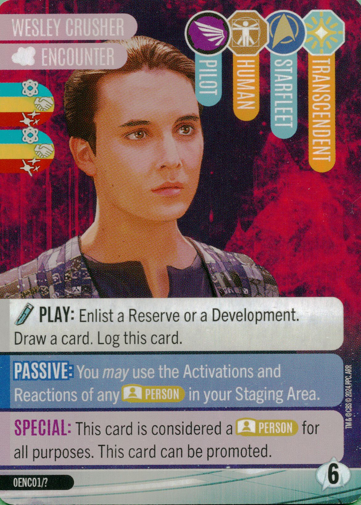

Introduction

Welcome to something a bit different. With the dawn of a new core set in To Boldly Go and an expansion in the form of Second Contact, I know people are going to be ignoring David’s warnings and will be mixing common cards from the jump. And even if you don’t, promo pack #1 can be mixed in with anything, which means that Wesley Crusher is about to have a field day causing crazy Activations and Reactions, in addition to rule-breaking scenarios where we forget he doesn’t apply to Passives, or that it doesn’t quite work out. I know that getting the first promo pack has been difficult for some people, but I didn't want to let a variety of rules interactions go uncommented on just because not everyone has those cards yet. I hope that more of those promo packs can get in people's hands soon. In the meantime, this article is being posted to the main Captain's Chair forums because I'm sure people will miss it if it's in the Promo Pack's forums, and it applies to interactions from the entire game. I also plan on updating this as each new wave of content comes out.
↑ back to topGeneral Concepts
Before we delve into what is essentially a laundry list of cards that I’m hoping you’ll be able to reference as needed, I wanted to review a bunch of general concepts. Some are more obvious that others, and some apply to more than just Wesley. Keep these in mind whenever you consider how Wesley interacts with Person cards in your staging area.
- Person Cards in your Staging Area ARE NOT treated as Duty Officers: This is somewhat obvious, but the Wesley of it all might require the confirmation. This means that just because Wesley is your Duty Officer, you can’t suddenly treat the cards in the Staging Area as Duty Officers too. That means no dismissing them as a result of an attack that tells you to dismiss a Duty Officer. That will have to be Wesley or someone else actually on duty. You also can’t refresh them (see EXHAUST and REFRESH below)
- Wesley Crusher’s ability DOES NOT apply to Passive Abilities: I repeat this throughout but it’s also important to remember. Don’t accidentally start using Deanna Troi’s Passive when she’s in your Staging Area. It doesn’t apply. Only Reactions and Activations. Nothing else.
- After Triggering Activations/Reactions, you EXHAUST the card: When you trigger the table operations of a Duty Officer, you will exhaust that card. The same goes for using the table operations of any cards in your Staging Area that are only usable due to Wesley Crusher. If you use it, you have to exhaust it.
- You CAN REFRESH cards in the Staging Area, but it is rare: There’s nothing that prevents you from refreshing cards in the Staging Area, but you can only do so if the ability specifically lets you refresh a Person card, specific trait, or any card. Refreshing a Duty Officer will NOT apply, because Person cards are NOT Duty Officers (see above).
- Cards in the Staging Area CANNOT BE DISMISSED: This is important for many reasons, including attacks from an opponent, but particularly in regards to Wesley. Cards in the Staging Area cannot be dismissed, which means that if Duty Officer requires their own dismissal to pay a cost, you can’t pay that cost or use the ability. Likewise, if a card in the Staging Area would be dismissed, but not as a cost, you simply don’t dismiss it. This is probably the most difficult edge-case rule because even remembering it might make you unsure of whether you can use Wesley’s ability with the Person card in question, which is a big part of why I made the guide. And there’s an interesting edge case here too: you trigger a table operation in the staging area that requires you to dismiss something, and you choose to dismiss Wesley because he meets that requirement. You can then dismiss Wesley and finish resolving the operation, but nothing else can be triggered further.
- Cards in the Staging Area CAN BE RECALLED: This is not a Wesley specific rule, but after all of that it’s a good reminder that you can use many Time Travel abilities to recall a card from you staging area, which would then be able to be played again. After playing it again, it would not be exhausted, and you could use the Table Operations via Wesley again.
- If a Person Card is promoted to Duty Officer from staging while exhausted, they STAY exhausted: This one might feel obvious to some people but it’s important since recalling a card automatically un-exhausts it when it’s in your hand. This would apply no matter how you promote the card, though the obvious application is Red Alert (Incident).
To get ahead of specific questions, I have gone through every person card released to date and have listed out how they interact with Mr. Crusher as a Duty Officer. To be sure, most of the Activations and Reactions are straightforward, but for those that aren’t, or if you just aren’t sure, here’s a list of how every Person card interacts with Wesley Crusher (Encounter).
I’ve broken this down into Core box commons, To Boldly Go commons, and Second Contact commons, then by each Captain individually. For Captains, I’ve just listed all the person cards in the deck. For smaller expansions like Second Contact, I’ve done the same. For the core boxes, I’ve broken down the commons into the Categories of Activations, Reactions, and Passives (or No Effect). For Person cards with multiple different types of table operations, I’ve grouped them under Activation or Reaction depending on which comes first. For rare cards like Peanut Hamper, where the Passive is the first operation, you’ll find her under Reaction since that’s more useful information. I do intend to update this when each new box comes out, so bookmark this post for future updates. If I made a mistake or you aren’t sure, post in the comments below. And if there are multiple interactions that seem to break these rules, please point those out as well, since this is focusing on how the Person cards interact with Wesley, not how every card interacts with every Person card when it triggers from the Staging Area. Find those weird combos!
↑ back to topCore Box Commons
ACTIVATIONS
- Admiral Necheyev:Spend a Dilithum to Warp any number of Ships as normal.
- Admiral Pressman: Dismiss a Cloak and log Pressman from the Staging Area to gain three Glory as usual.
- B-4: Log a card, your opponent takes an Incident, and you gain Dilithium as normal.
- Harry Mudd: You cannot use this activation because it would require you to Dismiss Harry Mudd, which you cannot do for cards in the Staging area.
- Laris: Spend Dilithium or Latium to Refresh as normal.
- Lenara Kahn: You would use the Activation as normal to spend Latinum for Glory per Anomaly. Lenara would not be dismissed, but this would not prevent you from using the first part of the Activation.
- Lursa: Discard a card and gain benefits as normal.
- Zefram Cochrane: This works as normal, Cochrane will just need to be logged from the Staging area.
REACTIONS
- Admiral Jarok: Can only be used if the opponent Attacks you as a result of their Reaction but otherwise works as normal. The Passive is not in effect.
- Ambassador Kamarag: Cannot be used because an Opponent will not take control of a Location during your Action phase.
- Bruce Maddox: After putting an Android in play, draw a card and gain two Glory as normal.
- Captain Dorg: For Dorg’s first reaction, if Wesley was already Duty Officer when Dorg was put into play, you can immediately trigger this reaction and dismiss ANOTHER Klingon (because you can’t dismiss him from the Staging Area) to use the Reaction. If Wesley is promoted to DO after Dorg is put into the Staging Area, then you’ll need another Shady to trigger his reaction, and another Klingon to dismiss to gain the Action token. For his second Reaction, Dorg meets the requirement to trigger it if Wesley is already your Duty Officer, and would need another Klingon or a Pakled to trigger if Wesley was promoted after Dorg was put into play in the Staging Area.
- Laas: Spend a Dilithium to find a card in your draw deck as normal.
- Lwaxana Troi: Draw a card after putting a person in Play as normal.
- Mirok: Draw a card after putting Cargo into play triggers as normal.
- Moriarty: Playing Moriarty triggers the reaction for both rewards as normal, as it does for other Holograms/Synthetics if for some reason you didn’t trigger those when you put Moriarty into play (or he was in play before Wesley was promoted to Duty Officer).
- Peanut Hamper: Passive does not apply. For the reaction, after putting a Shady into play, you would remove Peanut Hamper from the Staging area and place her on top of her Deck and gain the Latinum as normal.
- Phlox: After sending an Away Team, spend a Dilithum to gain a Research as normal.
- Riva: Can only be used if the opponent Attacks you as a result of their Reaction, but otherwise works as normal.
- Rom: After Gaining Latinum, draw a card as normal.
PASSIVE and NONE (Do Not Apply)
- Joret Dal: Hand size increase does not apply
- Sakonna: None.
- Su’kal: Passive does not apply.
- Talok: Hand Size increase does not apply.
- Tevrin Krit: None.
To Boldly Go Commons
ACTIVATIONS
- Degra: You still need to meet the Research 5 Requirement, but after dismissing a Weapon and spending 4 Dilithium you will take the top Encounter and log Degra as normal from the staging area.
- Hoshi Sato: You would draw a card and find a card in the Reserve deck as normal. If you find a Person card, that’s an extra bonus since you can still use that Person card’s Activation or Reaction operations now.
- Jackabog: There is nothing preventing you from beaming a Helmet to a card in the Staging Area. I’m just not sure why you would want to do so, except maybe for the trait in play.
- Landru: You can do both activations as there is nothing preventing you from beaming a Person card to a card in the Staging Area. However, you won’t be able to get enough Person cards here in time unless you have a way to Refresh Landru twice, which is unlikely.
- Petra Aberdeen: Both her Activation and Reaction work as normal, gaining Latinum or spending for Research track gain.
- Sarina Douglas: You may free play an Incident from your discard pile as normal.
REACTIONS
- Ambassador Gral: When you would return an Incident, give it to your opponent as normal.
- Commander Tysess: You may trigger the control operation as normal, but you may not have this in your staging area often if you beam it to a deployed ship per the Play Action.
- Malcolm Reed: You cannot use this Activation because your opponent will not be deploying ships during your Action phase (at least I’m not aware of anything that allows your opponent to deploy a ship on your turn).
- Malik: The Passive does not apply, so do NOT county the Military skills for moving up the Military track. The reaction works as normal, triggering for Malik when Wesley is already your Duty Officer. If he’s in play before Wesley is your Duty Officer, you’ll need another Attack to be put into play.
- President Rillak: Her Reaction works as normal to gain an action token after playing Utilize or Inspire. Her passive does not apply.
- Soji Asha: Her Reaction works as normal, and triggers upon putting her in play. If Wesley is promoted to Duty Officer after she is put into play, you’ll need a different Synthetic to trigger her Reaction.
- Travis Mayweather: His Reaction triggers as normal when deploying a Ship, taking an Incident, and gaining an action token.
PASSIVE and NONE (Do Not Apply)
- Ash Tyler: Hand size increase does not apply.
- Thelev: Hand size increase does not apply.
- Va’Al Trask: None
- Vice Admiral Pasalk: None.
Second Contact Commons:
Market Commons
- D’Erika Tendi: Spend two Latinum and send an Away Team as normal, removing an opponent location and gaining Glory if applicable.
- Jennifer Sh’reyan: Warp a ship to draw two cards and discard one of them as normal.
- K’ranch: Log a gained card to gain a Dilithium and draw a card as normal.
- Ma’ah: Log a Kligon/Shady/Lower Decker to gain an Influence and draw two cards as normal.
- Parmen: Meeting the six Influence requirement, after gaining a Person, discard a card to free play the gained card as normal. This is actually easier to understand because you don’t need to worry about ever gaining a person during your Resupply step with this card and Wesley.
Crossover Rewards
- Ambassador Spock: Reaction works as normal when putting an Encounter into play. Passive does not apply.
- Barry Waddle: Passive does not apply. His Reaction triggers as normal after spending Latinum, and would be a potential way to refresh a Person card in the Staging Area.
- Chancellor Gowron: His Reaction would work as normal, but you’d have to take control of the location during your Action Phase for it to apply.
- Chef Riker: Both Activations work normally, to free play a Ship or draw a Ship/Hologram/NX-01 from your discard pile.
- Ensign Boimler: None.
- Ensign Mariner: None.
- Lieutenant Dax: When gaining, scan 2 of the same suit instead and draw a card, as normal.
- The Living Witness: None.
Core Box Captains
Jean Luc Picard
- Will Riker: Free Play or Draw as normal.
- Worf: Discard a card to remove the Away Team and gain Glory as normal.
- Data: Log a card from your hand and choose a track to gain on as normal.
- Beverly Crusher: You can exhaust to use the reaction when you take an Incident as normal.
- Geordi La Forge: Gain the Glory and free play the gained Ship as normal.
- Deanna Troi: This is a Passive and does not apply.
Thy’lek Shran
- Talas: Discard and send an Away Team as normal.
- Tarah: If you meet the 5 Military requirement, refresh a Ship and location, potentially gaining two Glory as normal.
- Jhamel: This is a Passive and does not apply.
- Ambassador Thoris: Gain a Glory per Ally card as normal.
Koloth, The Dahar Master
- Krell: None.
- Korax: Refresh theGr’oth and potentially discard another card to refresh a Klingon Ship as normal.
- Arne Darvin: This is a Passive and does not apply.
- Mara: None
- Kor, The Dahar Master: After gaining Influence, gain a Military and you may warp a ship as normal.
- Kang, The Dahar Master: After gaining Influence, gain another influence and a Glory as normal.
- Curzon Dax: Pay an action token and discard a card to scan 2 of Ally as normal.
Benjamin Sisko
- Quark: Gain glory when paying Latium during an operation as normal.
- Kira Nerys: This will never apply, because your opponent will not take control of locations while Kira is in your staging area (unless future rules make a change that allow cards to remain in your staging area).
- Jadzia Dax: When gaining, scan 2 of the same suit instead as normal.
- Miles O’Brien: None.
- Odo: Log a card and potentially gain Glory as normal.
- Julian Bashir: Spend a Dilithium to choose two options as normal.
- Worf: The Reaction will never happen as Worf will get dismissed at the end fo your turn. You can still use the Attack activation and gain a Glory as normal.
- Garak: This is a Passive and does not apply.
Sela
- Sub-Commander T-Rul: Gain Latinum after putting a Cloak into play as normal.
- General Movar: Take an Incident to gain a Dilithium and free play an Attack as normal.
- T’Pel: This is a Passive and does not apply.
- Tomalak: Both Activations can be used as normal, but you must exhaust the card and only use one of them.
- Donatra: Both Activations can be used as normal, but you must exhaust the card and only use one of them.
- Proconsul Neral: Although you can use this Raction when you take control of a location during your Action Phase, that is rare (Scimitar or Unstable Wormhole being most likely).
- Shinzon: Gain a military and your opponent takes an Incident as normal.
Michael Burnham
- Paul Stamets: Because you have to dismiss this card and the Discovery-A, and you cannot dismiss Stamets from your Staging Area, you cannot use the Activation on this card.
- Cleveland Booker: Draw cards or gain glory per Creature as normal.
- Keyla Detmer: This is a Passive and does not apply.
- Joann Owosekun: Exhaust a Ship to Refresh its location as normal.
- Sylvia Tilly: Send an Away Team as normal.
- Saru: None.
- Hugh Culber: Trigger after taking an Incident as normal.
- Jett Reno: Take an Incident to gain a Cargo or Ship as normal.
- Adira Tal: Reaction triggers upon gaining a card as normal. The second operation is a Passive and does not apply.
- Admiral Vance: All elements work as normal, from drawing cards per Away Teams and gaining an Incident.
- Doctor Kovich: This is a Passive and does not apply.
To Boldly Go Captains
Phillipa Georgiou
- Kamran Gant: Refresh a Ship and remove opponent Away Teams as normal.
- Lt. Detmer: After warping a ship, draw a card as normal. Her Passive does not apply.
- Danby Connor: Log a card from your hand to draw a card or gain two Dilithium as normal.
- Cmdr. Burnham: None.
- Lt. Saru: None
- Admiral Anderson: Passive does not apply.
- Ambassador Sarek: Passive does not apply.
Soval
- Sub-Commander T’Pol: Discard a Human/Engineer to Draw a Cargo/Directive from your Discard Pile as normal.
- Muroc: Free play a Vulcan Ship or Draw a Ship from your discard Pile as normal.
- Stel: Exhaust a deployed Ship to recall a card beamed, and you may Free Play an Indecent as normal.
- V’Lar: After putting an Ally in to play, draw a card, gain a Glory and Latinum as normal.
- Minister Kuvak: Passive does not apply.
- T’Pau: Passive does not apply.
James T. Kirk
- Captain Spock: After gaining a person, spend a Dilithium to send an Away Team where you have a Ship and gain a Glory as normal.
- Lenard McCoy: After discarding or logging a Person, Free play an Incident from hand or discard as normal.
- Nyota Uhura: Spend Dilithium for Glory per Different Species traits as normal.
- Pavel Chekov: After warping a ship to a neutral location, discard a person to send an Away Team and gain a Glory as normal.
- Montgomery “Scotty” Scott: Gain Dilithium and Refresh a Ship/Cargo as normal.
- Sarek: Passive does not apply.
- Hikaru Sulu: Reaction will not apply as you will not be attacked during your Action Phase.
Jonathan Archer
- “Trip” Tucker III: Refresh a Ship/Cargo as normal. Reaction works as normal to draw dismissed Ship from your discard pile.
- T’Pol: Discard a Human/Engineer to Draw a Cargo/Directive from your Discard Pile as normal.
- Major Hayes, MACO: Works as normal, must pay action toke and meet 3 Military Requirement, and then is logged from the Staging Area.
- Admiral Forrest: Discard a card to place a Glory on Earth (Status) as normal. Passive does not apply.
- Ambassador Soval: Disard a Human to move up a track and draw two cards as normal.
- Commander Shran: Discard a card to send an away team and potentially gain Dilithium as normal.
- Agent Daniels: Discard a card to recall a non-Time Travel card from your Staging Area as normal. This would never include Daniels himself, but should open up some interesting combinations with Wesley. Passive will not apply.
Rebner
A disclaimer in general for Rebner. His Person cards tend to benefit from wearing Helmets, but the main way to beam Helmets to them is when they are Duty Officers, and with Wesley, they will not be the Duty Officer nor will they be wearing helmets. While some cards can work, most won’t work effectively.
- Grebnedlog: Discarding a Person card and gaining benefits works as normal. The Helmet dependent text works normally but is unlikely.
- Reginod: The Helmet dependent text works normally but is unlikely. The rest of the Activation warping and beaming a card to a Ship would work as normal.
- Ambassador Gruboin: You an gain a Military for each Hemet in play. The Helmet dependent text works normally but is unlikely.
- Rumdar: Drawing cards works as normal. The Helmet dependent text works normally but is unlikely.
- The Pakled Emperor: The Helmet dependent text works normally but is unlikely., and you would log this card and the Big Enough Helmet from the Staging Area.
Khan Noonien Singh
- Joachim: After deploying a Ship, discard a card to send an away team to a Neutral Location as normal.
- Wajahut: After you take control of a Location, discard a card for an Action token or spend one to enlist a development. You do not dismiss this card because it is not a cost of the Action, but you can still use the Reaction.
- Marla McGivers: Refresh your captain and you may discard a card to find an Augment as normal.
- Cmdr. Chekov: After warping a ship to a neutral location, discard a person to send an Away Team and gain a Glory as normal.
- Cpt. Terell: After taking an Incident, spend a Dilithium to send an Away team to a location where you have a Ship as normal.
Second Contact Captains
Christopher Pike
- Erica Ortegas: After deploying a Ship, you may discard a card to gain a glory and discard a card to find Hit It as normal.
- Cadet Uhura: After exhausting Improbable, Unstoppable, Sensational, discard a card to draw a card from your discard pile as normal.
- Joseph M’Benga: After discarding a card with Military or Wild skills, return an Incident from your hand or discard pile.
- La’an Noonien Singh: Beam a card to a ship as normal. Passive does not apply.
- Lt Spock: Discard a Research Skill/Focus to find any card except in your Reserve deck, as normal.
- Hemmer: Paying the Action token, you may free play an Incident a normal, and log this card from your Staging Area to select a secured neutral location and control it.
- Una “Number One” Chin-Riley: Pay the Action token and discard a card to send an Away team to a location as normal.
- Christine Chapel: None.
- Dak’Rah: None.
- Marie Batel: Passive does not apply. Activation works normally to refresh Improbable, Unstoppable, Sensational. When played for her second play action, she will not often be in your Staging Area as she self-promotes..
- James Kirk (United Earth Fleet): Pay Action token and discard a person to gain a Person or a Ship and draw a card as normal. Do not dismiss this card, as you cannot dismiss it from your Staging Area. It is not a cost however, and the rest of the card’s Activation can be used.
- Pelia: Spend an Action toke and discard a card to gain a Cargo from the Junk. You may spend a Latinum to draw a card and gain a Glory as normal.
- Lt. Scott: Either Discard a card to refresh a Location, or gain 2 Dilithium and find or refresh a Ship, as normal.
William T. Riker
- Deanna Troi-Riker: Passive does not apply. Activation works as normal.
- First Officer (U.S.S. Titan): Spend an Action Token to gain a Cargo as normal.
- Brad Boimler, Lt. JG: Spend an Action Token to discard a card with a Research skill and take an Incident to List a Development, as normal.
- Chief Engineer (U.S.S. Titan): Passive does not apply. Activation works normally to gain a Glory.
- Tactical Officer (U.S.S. Titan): Passive does not apply.
- William Boimler, Lt. JG: Passive does not apply.
Carol Freeman
- Beckett Mariner: Spend an Action Token to gain on one Specialty track as normal. Do not dismiss this card, as you cannot dismiss from you Staging Area. It is not a cost however, and the rest of the card’s Activation can be used.
- Bradward Boimler: Spend an Action Token to dismiss 4 Lower Deckers and take an Incident to take the top Encounter. This card CANNOT be one of those 4 cards because it cannot be dismissed from the Staging Area, but the text can still be resolved if you have 4 other Lower Deckers.
- Jack Ransom: Put a card on top of your deck to gain a Person to your discard pile as normal.
- D’Vana Tendi: Passive does not apply.
- Samanthan Rutherford: Spend an Action Token to gain Dilithium per the card, and potentially gain back an Action Token as normal.
- T’Ana: After taking an Incident, return it as normal, then put this card on the bottom of your deck and gain an Action Token. Cards from Staging can be “put” elsewhere (this is not a dismissal). The Passive does not apply.
- Shaxs: Remove an opponent Away Team from a neutral location and gain a Glory as normal.
- Kayshon: Meeting the 5 Military Requirement, send an Away Team to a location, then repeat for every Spy card your opponent has in play as normal.
- T’Lyn: After gaining a card, gain a Research and spend a Dilithium to free play the gained card as normal.